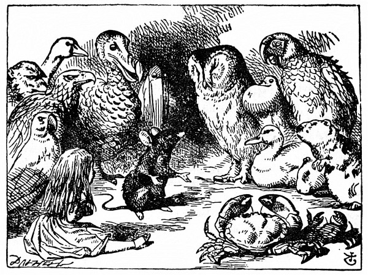

Kuriální závod a sáhodlouhý obrázek
Sešla se tam na břehu prapodivná cháska – ptáci s urousaným peřím a ostatní zvířata se zplihlou srstí, všichni promočení, podráždění, nevrlí.
Především jim šlo samozřejmě o to, jak se usušit: radili se a za chvilku se s nimi Alenka nenuceně bavila, jako by je znala odjakživa. Dokonce se poškorpila s Papouškem a ten ji nakvašeně usadil: „Jsem starší než ty, a tak to musím vědět líp.“ Alenka mu to nechtěla uznat, dokud jí nepoví, kolik je mu; a protože jí to Papoušek zanic nechtěl říct, nedalo se nic dělat.
Nakonec vykřikla Myš, která se zřejmě těšila všeobecné vážnosti: „Všichni se posaďte a poslouchejte! Já vás osuším jedna dvě!“ Hned se všichni posadili, Myš uprostřed. Alenka na ni starostlivě upírala oči; jestli se hned neosuší, to věděla, dostane rýmu jako trám.
„Ehm!“ odkašlala si významně Myš. „Dáváte všichni pozor? Nic suššího nad tohle neznám. Ticho, prosím! Vilém Dobyvatel, jemuž přál papež, brzy podrobil Angličany, kterým se nedostávalo vůdců a poslední dobou se oddávali loupežím a výbojům. Edvin a Morkar, hrabata z Mercie a Northumbrie –“
„Brr!“ otřásl se Papoušek.
„Prosím?“ zeptala se Myš zamračeně, ale zdvořile. „Říkal jsi něco?“
„Já ne!“ řekl honem Papoušek.
„No proto,“ řekla Myš. „Tedy pokračuji. Edvin a Morkar, hrabata z Mercie a Northumbrie, se přidali k jeho praporu, a dokonce Stigand, vlastenecký arcibiskup canterburský, to shledal prospěšným –“
„Co shledal?“ zeptala se Kachna.
„No přece to,“ odsekla Myš nadurděně, „snad víš, co je to.“
„Samozřejmě že vím, co je to, když to hledám já,“ řekla Kachna. „Bývá to žába nebo červ. Ale jde o to, co shledal arcibiskup.“

Myš si této otázky nevšímala a rychle pokračovala: „– to shledal prospěšným, vydal se s Edgarem Athelingem Vilémovi v ústrety nabídnout mu korunu. Vilém si zpočátku vedl umírněně. Ale zpupnost jeho Normanů – Jak je vám, milá?“ obrátila se Myš k Alence.
Mokrá jako dřív,“ řekla Alenka smutným hlasem. „Vůbec jsem při tom neuschla.“
„Když je tomu tak,“ řekl slavnostně Blboun a vstal, „navrhuji odročení schůze za příčinou bezodkladného akceptování efektivnějších procedur –“

„Mluv jasně!“ řekl Orlík. „Já těm dlouhatánským slovům nerozumím a ostatně ty, jak se mi zdá, taky ne!“ A Orlík sklopil hlavu, aby nebylo vidět, jak se usmívá, zato jiní ptáci se uchichtli.
„Chtěl jsem říct jen tolik,“ bránil se Blboun uraženě, „že nejlíp se usušíme kuriálním závodem.“
„Co je to kuriální závod?“ zeptala se Alenka; ne že by jí na tom záleželo, ale Blboun se odmlčel, jako by čekal, že někdo něco řekne, a bylo vidět, že se do toho nikomu nechce.
„No nejlépe si to vysvětlíme,“ řekl Blboun, „když to uděláme.“ (A protože byste si to možná někdy v zimě sami rádi zkusili, řeknu vám, jak to Blboun provedl.)
Nejdřív vyznačil jakžtakž do kruhu závodní dráhu („na přesném tvaru nezáleží,“ řekl), pak přítomné rozestavil na závodní dráze každého jinam. Žádné „raz, dva, tři, teď“, každý se rozběhl, kdy chtěl, takže bylo těžko poznat, kdy doběhl. Běhali tak asi půl hodiny, až úplně uschli, a tu křikl Blboun: „Konec závodu!“ a všichni ho obklopili a udýchaně se ptali: „Kdo vyhrál?“
Než jim Blboun odpověděl, hluboce se zadumal, dlouhou chvíli seděl a prst si tiskl na čelo (však víte, jak to na obrázcích dělává Shakespeare) a ostatní tiše čekali. Konečně řekl Blboun: „Všichni vyhráli a všichni budou odměněni cenou.“
„Ale kdo bude udílet ceny?“ ozvali se sborem. „No samozřejmě ona,“ řekl Blboun a ukázal prstem na Alenku. Všichni ji obklopili a volali jeden přes druhého: „Ceny! Ceny!“
Alenka nevěděla, co počít, a v té bezradnosti sáhla do kapsy a vytáhla krabičku bonbónů (naštěstí je slaná voda nepromáčela) a za odměnu je rozdala. Na každého se dostal jeden.
„Ale ji taky musíme odměnit cenou,“ řekla Myš.
„Samozřejmě,“ odpověděl se smrtelnou vážností Blboun. „Co máš ještě v kapse?“
„Jenom náprstek,“ řekla smutně Alenka.
„Sem s ním,“ řekl Blboun.
Znovu obklopili Alenku a Blboun jí slavnostně odevzdal náprstek se slovy: „Račiž přijmout tento roztomilý náprstek,“ a když ten krátký proslov dopověděl, všichni křikli hurá.
Alence to připadalo hloupé, ale oni se tvářili tak vážně, že jí zašla chuť do smíchu; a protože jí žádné vhodné slovo nenapadlo, jen se uklonila a velmi vážně přijala náprstek.
Potom se jedly bonbóny. Neobešlo se to bez křiku a zmatku, velcí ptáci reptali, že jim bonbóny nechutnají, malí se zas dávili, až dostali herdu do zad. Konečně dojedli, znovu se sesedli dokola a prosili Myš, aby jim ještě něco vyprávěla.
„Slíbila jsi mi, že mi povíš něco ze svého života,“ řekla Alenka, „a jak to, že nemáš ráda – K a P,“ dodala šeptem, aby se snad Myš zase neurazila.
„Ten můj obrázek je sáhodlouhý a smutný,“ řekla Alence s povzdechem Myš.
Alenka přeslechla, co Myš říká, a s úžasem se zahleděla na její ocásek: „Sáhodlouhý, to je, ale proč by měl být smutný?“ A tak při Myšině vyprávění pořád hloubala, až se jí ten obrázek proměnil v takovýto ocásek –
Spustil Hafan
na Myš:
„Marně se mi bráníš,
na soud pojecháš,
proč?
se ještě ptáš!
Já tam taky půjdu,
žalovat tě budu,
o tvé vině soud
musí rozhodnout.
Pojď a neodmlouvej.“
Myš mu řekla:
„Ouvej, to mi
nejde do noty,
bez soudce a poroty
není
žádné rozsouzení!“
Odpověděl pes:
„Milá Myško, věz, jak je zvykem Hafanů,
porotu i soudce
zastanu.
Po tom procesu
ortel smrti
vynesu.“
„Když ty nedáváš pozor!“ plísnila Myš Alenku. „Nač myslíš?“
„Promiň laskavě,“ řekla Alenka poníženě, „ale v těch zákrutech jsi došla, zdá se mi, na osmičku.“
„Jakou smyčku?“ utrhla se na ni Myš.
„Smyčku!“ Alenka ráda každému pomáhala, a hned se tedy ohlížela kolem sebe. „Dovol prosím, já ti ji rozvážu!“
„To nedovolím,“ Myš vstala a šla pryč. „Urážíš mě těmi nesmyslnými řečmi.“
„Já jsem to tak nemyslila,“ bránila se chudák Alenka. „Ale když ty jsi tak urážlivá!“
Myš místo odpovědi jen zavrčela.
„Prosím tě, vrať se a dopověz nám to,“ volala za ní Alenka. A všichni do toho vpadli sborem: „Vrať se, prosím!“ Ale Myš nedůtklivě zavrtěla hlavou a přidala do kroku.
„Škoda že tu nezůstala!“ povzdechl si Papoušek, sotva jim zmizela z očí; a stará Krabice se toho hned chytla a napomenula dceru: „Milé dítě! Vezmi si z toho příklad a nikdy se nedej strhnout k hněvu!“ „Buď zticha, mami!“ odsekla dcera. „Ty bys i ústřici dožrala!“
„Kdybych tady tak měla Micku!“ řekla Alenka nahlas, jen tak pro sebe. „Ta by mně ji hnedle přinesla zpátky.“
„A kdo to je Micka, že jsem tak smělý,“ zeptal se Papoušek.
Alenka o svém miláčkovi vždycky ráda povídala, a tak ochotně odpověděla: „Micka je naše kočka. Jak ta vám chytá myši, to stojí za to. A jak pase po ptáčcích, to bys viděl! Sežere ptáčka, jen ho uvidí!“
Po jejích slovech nastalo mezi přítomnými hotové pozdvižení. Někteří ptáci se hned sebrali a zmizeli. Jedna stará Straka si důkladně zapnula límec a prohodila: „Já už musím opravdu domů; večerní vzduch mi nedělá dobře na krk!“ a jeden Kanárek svolával rozechvělým hláskem děti: „Pojďte, dětičky! Musíte na kutě!“ Pod různými záminkami odcházeli a Alenka tam zůstala sama.
„Neměla jsem se o Micce zmiňovat!“ řekla si smutně. „Nikdo ji tady nemá rád, a přec je to nejlepší kočka na světě! Ach má zlatá Micko! Jestlipak tě ještě někdy uhlídám!“ A nešťastná Alenka se ze samého stesku a žalu znovu rozplakala. Ale za chvilku se zase zpovzdáli ozvalo cupitání; dychtivě zdvihla hlavu, jestli si to snad Myš nerozmyslila a nejde jí dopovědět ten svůj obrázek ze života.